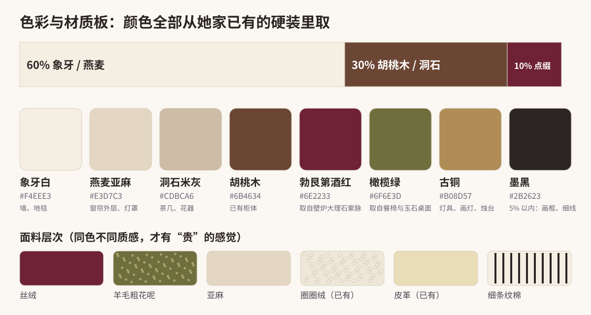
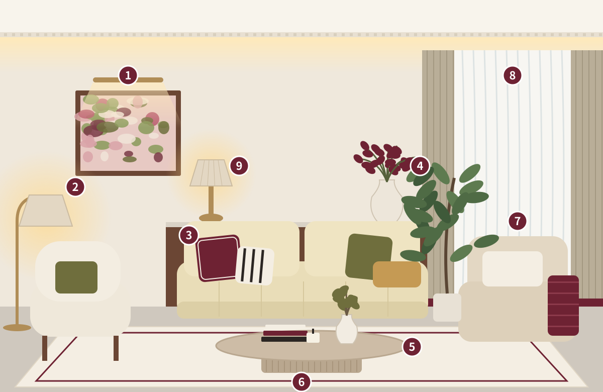
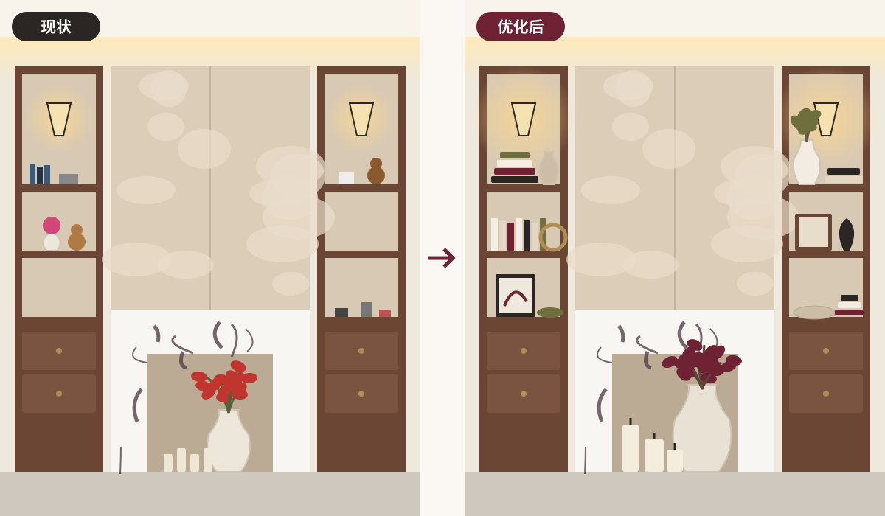
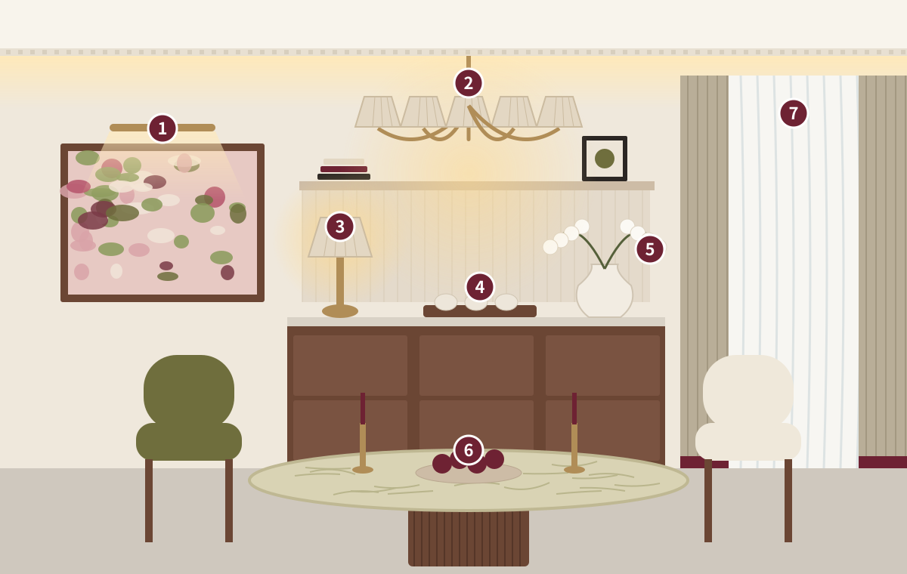

法式公寓软装优化方案：勃艮第与橄榄
更新日期：2026-11-23 · 状态：待 review 的初稿 · 依据：9 张现场照片（客餐厅、壁炉墙、主卧）。出于隐私，原始照片没有放进这个公开仓库。
核心结论
她家不土，硬装是这套房子最好的部分。“土”感来自软装：颜色没有主线、摆件偏幼态、灯光只有顶面一层。这三件事都不用动硬装。
- 方向：从“甜的法式”改成“巴黎公寓式的成熟松弛”。保留奶油底色，加入两种深色：勃艮第酒红和橄榄绿。这两个颜色都能在她家现有材料里找到（壁炉大理石的紫脉、餐椅和玉石桌面的绿）。
- 先做减法：收走圣诞抱枕、泰迪熊摆件、功能椅上的盖毯，把 5 种配色的花统一成一种。一个周末、零成本，观感就能变一半。
- 再补三样缺的：低位灯光（落地灯、台灯、画灯）、一张茶几、一组成套的抱枕。
- 预算：零成本整理 → 约 1–2 万元的第一期 → 约 3–6 万元的第二期。金额是我的粗估，没有逐项询价。
一、现状诊断
值得保留的硬装
- 顶面石膏线加暖光灯槽，法式骨架已经成立。
- 胡桃木柜体、洞石背板、云纹饰面板，材质统一而且有分量。
- 紫脉白色大理石壁炉框，带槽纹，是全屋最有性格的一件东西。
- 椭圆玉石餐桌配槽纹底座，橄榄绿和奶白两种餐椅的混搭是对的。
- 白色百叶柜门、四叶草镂空门，细节克制。
“土”感的 9 个来源
| # | 照片里看到的 | 为什么显土 |
|---|---|---|
| 1 | 沙发、地毯、单椅、脚凳、墙面全是奶白米黄 | 明度太接近，没有深色压住，画面发“飘” |
| 2 | 同时有粉色蝴蝶兰、橙红花束、紫橙混色花束、向日葵、红叶 | 5 套配色互相抢，花成了颜色噪声 |
| 3 | 姜饼屋和圣诞树刺绣抱枕、层架上的泰迪熊 | 卡通和幼态元素，与成熟的石材木作不在一个年龄段 |
| 4 | 功能椅上披着朱伊纹盖毯 | 像防尘罩；花纹和花卉画、花束叠在一起太碎 |
| 5 | 只有灯槽、吊灯、筒灯，没有落地灯和台灯 | 光全在头顶，晚上没有层次，石材显冷 |
| 6 | 壁炉两侧层架：零星小书、小摆件、小花 | 东西小而散，不成组，层架显空又显乱 |
| 7 | 餐边柜台面：养生壶、水壶、橙色茶具、轨道插座和电线 | 生活电器占了全屋最显眼的展示面 |
| 8 | 客厅没有茶几，只有小边几；地毯是素白一块 | 沙发区没有中心，家具像是各放各的 |
| 9 | 吊灯的大理石纹灯罩；白纱帘只有一层 | 灯罩花纹和石材重复；窗边缺一层有垂感的面料 |
二、她是谁：需求假设
你给的画像是高知、独立、单身的互联网大厂产品经理。下面是据此做的假设，需要她本人确认，不是结论。
- 家是自我表达，不是样板间。小红书 2026 年度居住趋势叫“适我主义”，相关话题累计超过 626 万讨论、20.4 亿浏览，方向是不再照搬“奶油风”“中古风”模板（界面新闻）。所以方案不换风格，只是把她已有的东西理顺。
- 房子等于安全感和底气。贝壳研究院数据：38 个样本城市女性购房者占比从 2017 年的 45.54% 升到 2021 年的 48.65%；74.6% 的受访女性认为婚前要有一套自己的房子（第一财经）。对应到软装：要“成熟、有主见”，而不是“可爱、被照顾”。
- 高强度工作后的恢复。一项住宅场景的虚拟现实实验里，带自然光和绿植的房间让受试者压力后的皮肤电导下降更多（−0.38 对 −0.19），血压没有差别（Frontiers in Virtual Reality 2025）。证据是中等强度的，但方向一致：保留那棵鸭掌木，晚上用暖光。
- 产品经理的审美习惯：少而准、有系统、每件东西说得出理由。所以下面每条建议都带一条规则。
三、行业趋势与标杆
| 趋势 | 依据 | 对她家意味着什么 |
|---|---|---|
| 去风格化混搭 | 上海家博会 2026 行业观察：纯法式这类单一风格在退场，混搭成为主流（CIFF） | 不再往“更法式”加码，而是加入现代和中古单品 |
| 全米色过时，颜色回归 | Homes & Gardens 把“全屋米色”列为 2026 该告别的做法（H&G） | 对应诊断第 1 条 |
| 酒红、棕、橄榄成为“新中性色” | 多家 2026 趋势报道都点名 burgundy、chocolate brown、olive（Southern Living、Home Beautiful） | 点缀色的选择有行业背书，而且和胡桃木天然相配 |
| 暖白仍是客厅底色 | Fixr 2026 专家调查：73% 的专家认为客厅用柔和或暖白色最保值，56% 把健康疗愈设计列为首要趋势（Fixr） | 奶油底色不用改，只加深色 |
两位可对标的法国设计师
- Joseph Dirand：古典线条加极简，偏单色，重用纹理强烈的大理石，靠少数细节点活空间（Wikipedia）。她家的石膏线加紫脉大理石正是这条路线，缺的是“少而准”的陈设。
- Pierre Yovanovitch：以克制和真实材料（木、石、金属）著称，当代艺术是空间的重要部分（1stDibs）。启发：用一两件有体量的雕塑感单品，替换一堆小摆件。
四、设计概念：勃艮第与橄榄

- 60-30-10 配色法则：主色 60%、辅色 30%、点缀色 10%，点缀色放在抱枕、花器、画这类小件上（DesignFiles）。她家前两层已经有了，只缺那 10%。
- 点缀色从硬装里取：这样新加的东西看起来像“本来就该在这”。
- 同色不同质感：丝绒、粗花呢、亚麻、圈圈绒、皮革叠在一起。全是同一种奶油色的光滑面，是显廉价的主要原因。
五、分区方案与搭配效果图
下面三张是我画的搭配示意图，用来说明位置、颜色和比例，不是照片级渲染。
客厅

- 现有花卉画保留，上方加一盏古铜画灯
- 单椅旁加落地阅读灯
- 抱枕组：酒红丝绒、细条纹、橄榄粗花呢、赭黄腰枕
- 餐边柜上一大束单色枝材
- 洞石椭圆茶几，上面三件一组
- 地毯换成带酒红细边的，或更大一号
- 功能椅做合身的燕麦色亚麻椅套，酒红盖毯叠放在扶手
- 白纱外加一层燕麦色亚麻帘
- 餐边柜上放台灯
| 动作 | 规则与依据 |
|---|---|
| 茶几长度约为沙发的 2/3，高度与坐垫齐平 | 2/3 比例（Havenly）；茶几与坐垫同高（Apartment Therapy） |
| 地毯至少压住沙发和单椅的前腿 | 把家具在视觉上连成一组（Houzz） |
| 抱枕 5 个：2 酒红、1 橄榄、1 条纹、1 腰枕 | 奇数成组更自然（Ideal Home 3-5-7 法则） |
| 圣诞季想要节日感：酒红丝绒加格纹羊毛盖毯 | 节日感用颜色和面料表达，不用卡通图案 |
壁炉墙与层架

- 每层只放一组，占 1/2 到 2/3，其余留白（Dallas News 采访设计师）。
- 书是主角：大开本艺术和设计类书，横放一摞加竖放一排。她的专业书也可以上架，这才是“她的”层架。
- 小件换大件：每侧 1 件陶器、1 个画框、1 件雕塑感物件。泰迪熊留一只最有意义的，移到卧室。
- 壁炉洞：换更大的陶罐配酒红枝叶；蜡烛改成高、中、低三支粗柱蜡。
- 左右两侧不要完全对称，重心一高一低。
餐厅与餐边柜

- 花卉画加画灯
- 吊灯不换，只把大理石纹灯罩换成褶皱亚麻灯罩
- 台灯补低位光
- 茶具收进一只胡桃木托盘
- 蝴蝶兰换白色、素陶盆、拆掉缎带
- 桌面：洞石浅盘放单一品种水果，加一对古铜烛台
- 亚麻外帘
- 养生壶和电水壶收进柜内或移到厨房，台面只留“好看的生活用品”。
- 如果以后换吊灯：灯底离桌面 76–91 厘米（5280 采访设计师）。
- 画的中心离地 145–152 厘米（Martha Stewart）。从照片看现在的高度基本合适。
灯光
- 三层光：顶面（已有）、中位（壁灯已有，加画灯）、低位（落地灯、台灯，现在是零）。分层照明是通用做法（DesignFiles）。
- 色温统一到 2700K 左右，晚上只开中低位灯（AARP 采访设计师 Hans Lorei）。照片里灯槽看起来偏黄、筒灯偏白，建议现场确认后统一。
花艺与绿植
- 全屋同一时间只用一套花色。秋冬用酒红加绿（大丽花、红叶、尤加利），春夏换白加绿。
- 数量减到 3 处：餐边柜一大束、茶几一小瓶、壁炉洞一罐。体量一大两小。
- 鸭掌木保留，换一只洞石色或素陶大盆。
主卧
- 床品做三层：白色床单、燕麦色亚麻被套、床尾一条酒红或橄榄绿盖毯。
- 梳妆台很好，只需把包装盒从搁板上收走，换成一小幅画和一只香氛。
- 两侧床头各放一盏小台灯，替代主灯做睡前照明。
六、分期清单与预算
金额为人民币粗估，按中高端但非奢侈品牌的常见价位，没有逐项询价，请当作量级参考。
| 阶段 | 内容 | 粗估 |
|---|---|---|
| 第 0 步 一个周末 | 收走圣诞抱枕、泰迪熊、盖毯；清空餐边柜台面；花减到 3 处并统一颜色；层架重新分组 | 0 元 |
| 第一期 见效最快 | 抱枕 5 个；落地灯 1、台灯 2–3、画灯 1；洞石茶几；吊灯灯罩 6 只；托盘、陶罐、柱蜡；艺术书 10–15 本；功能椅定制椅套 | 约 1–2 万元 |
| 第二期 提质感 | 带边羊毛地毯；亚麻外帘；一两件雕塑感单品或原创版画；主卧床品和床头灯 | 约 3–6 万元 |
七、请你 review 的点
- “勃艮第加橄榄”这个方向，她会不会觉得太沉？备选是“雾蓝加焦糖”。
- 那把披着盖毯的是不是按摩椅或电动功能椅？如果是，椅套要按机型定做；如果她愿意，挪到卧室更好。
- 云纹饰面板后面是不是电视或投影？这决定壁炉上方能不能挂东西。
- 泰迪熊和圣诞抱枕对她有没有特别的意义？有的话保留，换个位置。
- 预算上限和她所在城市，我可以据此把清单细化到具体单品。
来源
- 《2026 小红书年度居住趋势》“适我主义”，界面新闻
- 贝壳研究院女性居住消费调查，第一财经；另见 界面新闻
- CIFF 上海家博会 2026 行业趋势
- Homes & Gardens：2026 该告别的设计；2026 趋势总览
- Southern Living：2026 的浓郁中性色；Home Beautiful：The Paris Edit
- Fixr 2026 室内设计与色彩趋势报告
- 住宅亲生物设计与压力恢复，Frontiers in Virtual Reality 2025；反例见 PubMed 31625764（心率变异性无差别，但主观评价更好）
- 设计法则：DesignFiles、Martha Stewart、Havenly、Apartment Therapy、Ideal Home、Dallas News、5280、AARP、Houzz
- 设计师：Joseph Dirand、Pierre Yovanovitch